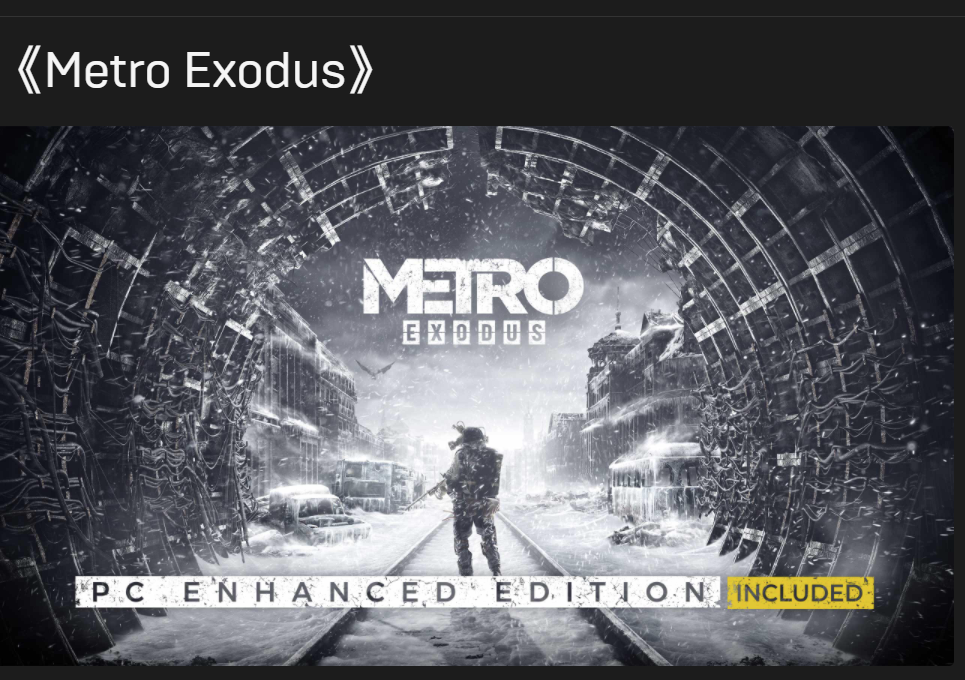
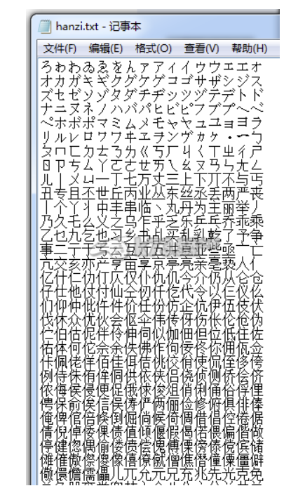
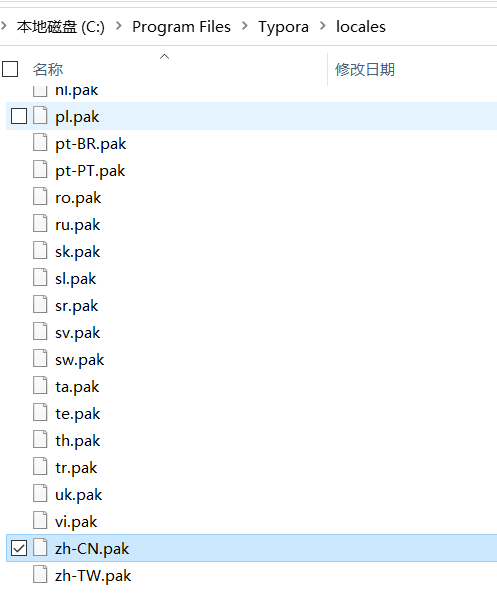
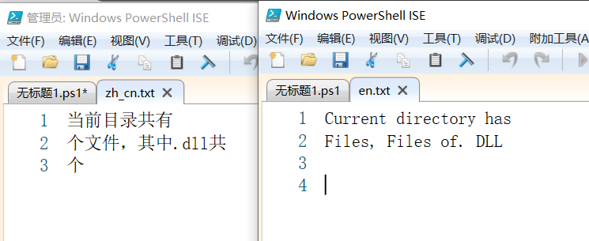
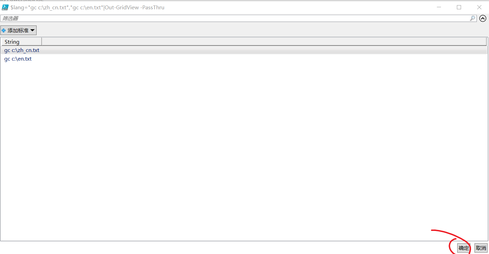
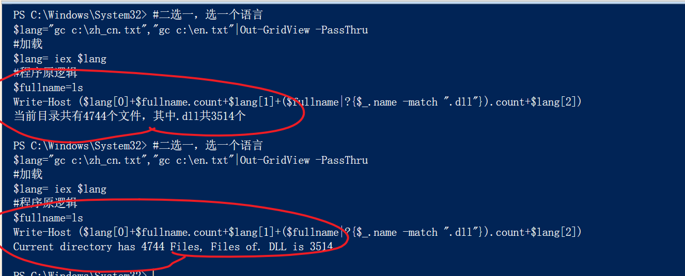

什么是i18n
i18n（其来源是英文单词 internationalization的首末字符i和n，18为中间的字符数）是“国际化”的简称。在资讯领域，国际化(i18n)指让产品（出版物，软件，硬件等）无需做大的改变就能够适应不同的语言和地区的需要。对程序来说，在不修改内部代码的情况下，能根据不同语言及地区显示相应的界面。 在全球化的时代，国际化尤为重要，因为产品的潜在用户可能来自世界的各个角落。通常与i18n相关的还有L10n（“本地化”的简称）。

有没有意义
正常来说，对小项目而言是没有意义的。但是在大项目和开源项目中，为了让自己的好东西被更多人接受，我觉得i18n是很有必要的。
比如4A Games，如果他没有i18n，只使用最淳朴的乌克兰语，很难说有现在的知名度。
当然它也不能没有乌克兰语的支持，如果只有英语，那本地人民会念他的好么？

这种恶劣行为相当于什么，相当于滴滴只有英文版，抖音上的网红没一个说中文。
i18n的实现方式
加密
主流的方式还是加密保存语言配置文件。
更有甚者，因为资源有限的问题，以前的游戏卡带厂商，还会把多国语言字库写入到ROM里面，让非官方的i18n完全没法做。
。
商业软件也有将多个语言文件保存为DLL或和其他乱七八糟的格式，方便调用的情况。
比如Typora就是用的.pak的格式。不过商业软件的问题也不是问题。一方面近十年来看，软件中文化越来越多，厂商已经把汉化给做了，所以用什么格式存储数据是人家的自由也无伤大雅。另一方面人家也没求着你帮他做汉化对吧。

不加密
不加密的种类就很多了，当然处理方式也是建议，一种语言一个文件或者一组文件，而不要多语言混用。
文件直接用记事本打开，可以用json，也可以是xml，甚至一行一个对象的流水账也可以。
什么场景做这个
想一想，某一天你做了个非常好的程序，想着去国外赚一笔狠的，美国卖了卖日本，日本卖了卖乌克兰。是为了不同软件专门重写一遍按钮和提示，还是把文字都抽象出来，专门雇个翻译两天搞定呢？
结果显而易见。
举个例子
首先上中文代码
1
2
3
4
PS C:\windows\system32> $fullname=ls
Write-Host ("当前目录共有"+$fullname.count+"个文件，其中.dll共"+($fullname|?{$_.name -match ".dll"}).count+"个")
#输出
当前目录共有4744个文件，其中.dll共3514个
针对这个例子，我们让它支持中英双语，前面用一个简单的设置来切换。
首先我们准备两个文本文件，放在c盘根目录，如图所示。
1
2
3
4
5
6
7
8
英文文件三行
Current directory has
Files, Files of. DLL is
中文文件三行
当前目录共有
个文件，其中.dll共
个

主程序改成这样
1
2
3
4
5
6
7
#二选一，选一个语言
$lang="gc c:\zh_cn.txt","gc c:\en.txt"|Out-GridView -PassThru
#加载
$lang= iex $lang
#程序原逻辑
$fullname=ls
Write-Host ($lang[0]+$fullname.count+$lang[1]+($fullname|?{$_.name -match ".dll"}).count+$lang[2])
这样的话，会有一个弹窗让你选择语言。

选择语言之后，我们看看中英文的不同反馈。

原理
上面只是最简单的一个例子。考虑到中文和英文之间除了单词之间要空格，甚至有表达方式的不同，你不能完全的像作文填空一样把文字完全留空出来。所以也有的翻译翻译方式就是整句带参数一起翻译，类似下面这样。
这里用到了PowerShell的一个特性
1
$arg[x]表示随便一个什么传进来的变量，不管名字不管内容，只在乎位置。
1
2
当前目录共有$arg[0]个文件，其中.dll共$arg[1]个
Current directory has $arg[0] Files, Files of. DLL is $arg[1]
后记
按照这种思路，把自己的程序中所有涉及输出的部分抽象出来，会很容易进行翻译，但是相应的，这种逻辑上的解耦，会让程序源代码变得晦涩起来。
所以这种做法适合程序的模块和功能打磨的比较完善的时候进行，而不是初始的功能实现阶段。